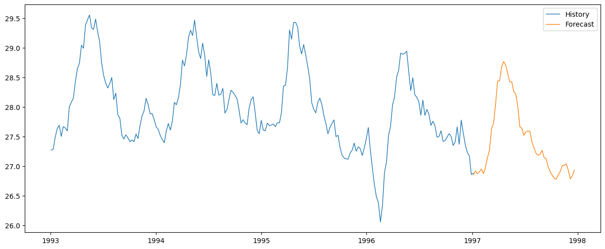

Graphical Representation
The line graph below illustrates the SARIMA model's performance on the test data, including the training set, actual sea surface temperatures, and the predicted values using the Holt-Winters method.

The SARIMA (Seasonal Autoregressive Integrated Moving Average) model was employed to predict sea surface temperatures based on historical data. The model was configured with additive trend and seasonality, utilizing Holt-Winters exponential smoothing.
The line graph below illustrates the SARIMA model's performance on the test data, including the training set, actual sea surface temperatures, and the predicted values using the Holt-Winters method.
The SARIMA model's parameters and statistics are as follows:
SARIMAX Results
============================================================================================
Dep. Variable: y No. Observations: 210
Model: SARIMAX(1, 0, 0)x(2, 0, [1], 52) Log Likelihood 51.796
Date: Sat, 18 Nov 2023 AIC -91.591
Time: 07:29:52 BIC -71.509
Sample: 01-03-1993 HQIC -83.473
- 01-05-1997
Covariance Type: opg
===============================================================================
coef std err z P>|z| [0.025 0.975]
------------------------------------------------------------------------------
intercept 0.2088 0.453 0.461 0.645 -0.679 1.096
ar.L1 0.9532 0.022 42.715 0.000 0.909 0.997
ar.S.L52 0.6381 0.476 1.340 0.180 -0.295 1.571
ar.S.L104 0.2019 0.171 1.181 0.237 -0.133 0.537
ma.S.L52 -0.5741 0.554 -1.035 0.301 -1.661 0.513
sigma2 0.0322 0.004 7.477 0.000 0.024 0.041
====================================================================================
Ljung-Box (L1) (Q): 0.28 Jarque-Bera (JB): 1.15
Prob(Q): 0.59 Prob(JB): 0.56
Heteroskedasticity (H): 1.32 Skew: 0.18
Prob(H) (two-sided): 0.25 Kurtosis: 2.98
====================================================================================
Several important criteria were used to evaluate the SARIMAX model's predicting performance for sea surface temperature. The main metric used to assess how accurate the predictions were in comparison to the observed values in the test set was the Root Mean Squared Error, or RMSE. The average extent of the discrepancies between projected and actual sea surface temperatures is shown by the root mean square error (RMSE), which is estimated to be around 0.2519. A model that fits the data better is shown by a lower RMSE. Moreover, the model's performance is contextualized by comparing the RMSE to the original sea surface temperature series mean, which is roughly 27.9919. The comparatively low root mean square error (RMSE) compared to the mean suggests that the SARIMAX model has good accuracy and captures the underlying patterns and variations in the sea surface temperature time series. The Ljung-Box and Jarque-Bera statistics, among other diagnostic tests, were also taken into account. A p-value of 0.59 from the Ljung-Box test for residual autocorrelation showed no significant autocorrelation. The residuals appear to have a normal distribution, as indicated by the p-value of 0.56 obtained from the Jarque-Bera test for residual normality. The general level of trust in the model's dependability is increased by these findings.
The SARIMA model was used to generate a forecast for the next 50 weeks. The graph below displays the historical sea surface temperature and the forecasted values for the upcoming weeks.
